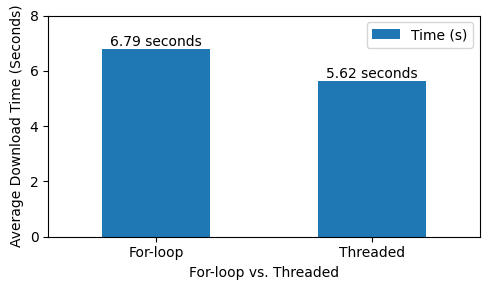
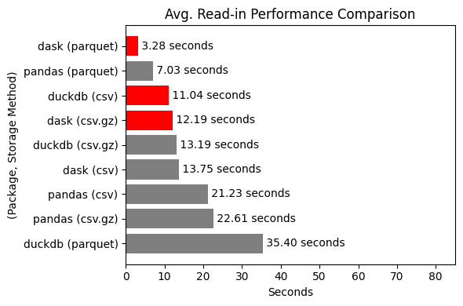
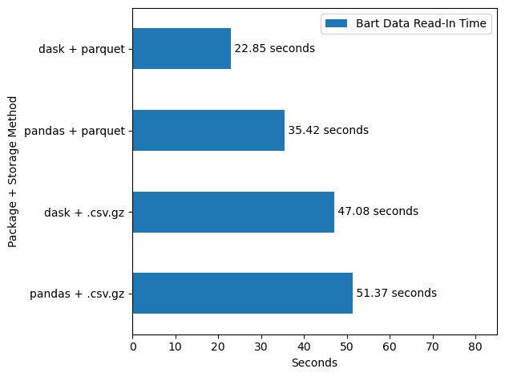

import pandas as pd
import numpy as np
import dask.dataframe as dd
import duckdb
# Timers
from dask.diagnostics import ProgressBar
from tqdm import tqdm
import time
# I/O Utilities
import warnings
import os
import glob
import requests
import csv
from bs4 import BeautifulSoup
import re
import shutil
from datetime import datetime
import gc
from concurrent.futures import ThreadPoolExecutor, as_completed
# Display
import matplotlib.pyplot as pltThe following post covers some of my evolving thoughts on efficient laptop-bound data retrieval, storage, and I/O tasks in Python. This post is not at all meant to describe the cutting edge of the efficient Python landscape for local data work– the goal here is to just give an overview of what I’m doing right now to balance efficiency and simplicity in my code.
I motivate this post with an analysis exercise where I retrieve and store historical data on Bay Area Rapid Transit (BART) ridership at the station/hour level. BART kindly makes such ridership information publicly available on their open data portal.
My end goal is to examine and justify (via benchmarking) the following workflows:
- Threaded downloads – when you need to download a lot of data files, use
concurrent.futuresto distribute downloads across threads.
Effect: ~20% decrease in download time relative to standard for-loop. - Column-oriented data storage – Use the apache parquet format to efficiently store tabular data locally.
Effect: ~50% reduction in data storage size relative to.csv. - Threaded/Parallel Data Read-in – Consider
daskand/orduckdbfor efficient data read-in and aggregation options.
Pre-requisites
- Intermediate
pandas,matplotlibknowledge - Familiarity with web data retrieval
Threaded Downloading
To start giving an overview of local data analysis techniques, I’ll surely need data. I’m going to retrieve BART’s hourly ridership data – here is the homepage of the BART data portal:

The specific url for the hourly ridership data is as follows:
url = 'https://afcweb.bart.gov/ridership/origin-destination/'
url'https://afcweb.bart.gov/ridership/origin-destination/'With a page that looks as follows:

The end goal will be to iterate through each of those links, downloading the files one by one.
Toward that goal,, I’ll start by setting up a retrieval script using requests and BeautifulSoup to build programmatic access to that page.
response = requests.get(url)
if response.status_code == 200:
soup = BeautifulSoup(response.text, 'html.parser')
else:
print("Failed to retrieve the webpage")Within the page, my target is the set of .csv.gz (compressed .csv files), each of which contain hourly ridership totals between each station pairing in the BART system. These are all links, thus are in <a> </a> tags, and have an href that ends in .csv.gz. The following captures links to that specification:
links = soup.find_all(
name='a',
href=lambda x: x and x.endswith(".csv.gz")
)
links[0]<a href="date-hour-soo-dest-2018.csv.gz"> date-hour-soo-dest-2018.csv.gz</a>I’m specifically interested in the file that each <a></a> chunk links to, which is contained in its href tag. I can capture the href for each of these pieces of html as follows
files = [link.get('href') for link in links]
files[0]'date-hour-soo-dest-2018.csv.gz'I’ve now captured the filename, which is a relative url. To download this, I’ll need to convert this to a full url, by concatenating the base url to each of the files’ relative urls. This leaves us with direct links that each prompt the download of one year’s worth of hourly trip totals between the station pairings in the system:
file_urls = [url + f for f in files]
file_urls['https://afcweb.bart.gov/ridership/origin-destination/date-hour-soo-dest-2018.csv.gz',
'https://afcweb.bart.gov/ridership/origin-destination/date-hour-soo-dest-2019.csv.gz',
'https://afcweb.bart.gov/ridership/origin-destination/date-hour-soo-dest-2020.csv.gz',
'https://afcweb.bart.gov/ridership/origin-destination/date-hour-soo-dest-2021.csv.gz',
'https://afcweb.bart.gov/ridership/origin-destination/date-hour-soo-dest-2022.csv.gz',
'https://afcweb.bart.gov/ridership/origin-destination/date-hour-soo-dest-2023.csv.gz',
'https://afcweb.bart.gov/ridership/origin-destination/date-hour-soo-dest-2024.csv.gz',
'https://afcweb.bart.gov/ridership/origin-destination/date-hour-soo-dest-2025.csv.gz']This is our target data. Before proceeding to download all of it for local storage, we’ll profile the sizes of each file and the total download:
counter = 1
total_size = 0
for f in file_urls:
response = requests.head(f)
file_size = int(response.headers.get('Content-Length', 0))
total_size += file_size
print(f"File {counter} size: {file_size} bytes ({round(file_size*10e-7, 2)} mega-bytes)")
counter += 1
print(f"Total size of data: {total_size*10e-7} mega-bytes")File 1 size: 38627139 bytes (38.63 mega-bytes)
File 2 size: 38177159 bytes (38.18 mega-bytes)
File 3 size: 21415653 bytes (21.42 mega-bytes)
File 4 size: 24350926 bytes (24.35 mega-bytes)
File 5 size: 30546036 bytes (30.55 mega-bytes)
File 6 size: 32224174 bytes (32.22 mega-bytes)
File 7 size: 33142435 bytes (33.14 mega-bytes)
File 8 size: 25776782 bytes (25.78 mega-bytes)
Total size of data: 244.260304 mega-bytesLooks manageable enough. We’ll proceed to download all of this into a folder, data. Since we are storing a semi-large amount of data in data, we will also set up a .gitignore to make sure that it doesn’t end up being tracked in version control.
# Create a .gitignore file
gitignore_content = "data/\n" # Content to exclude the "data" folder
with open('.gitignore', 'w') as gitignore_file:
gitignore_file.write(gitignore_content)To actually download the data, we’ll start by setting up a generic download function:
def download_file(url:str, filename:str) -> str:
"""Downloads a file from a given URL
and saves it with the specified filename."""
response = requests.get(url, timeout=30)
if response.status_code == 200:
with open(filename, "wb") as file:
file.write(response.content)
return f"Downloaded: {filename}"
else:
return f"Failed ({response.status_code}): {url}"Next, I’ll create some logic for our batch download, based around a for-loop wth conditions:
- Download each file from the list of links:
- make sure that the ingest doesn’t re-download files that I already have downloaded locally.
- UNLESS, it the data is from the current year, in which case it should be re-downloaded to reflect any updates since the last download.
These conditions should ensure that we don’t waste time and bandwidth re-downloading files that we already have, and that we always have the most up-to-date data for the current year.
def download_bart_file(url: str) -> str:
"""Downloads BART ridership data file if not
already present or if it's current year data."""
current_year: str = str(datetime.today().year)
filename: str = os.path.join("data", os.path.basename(url))
file_year: str = re.search(r"\d{4}", url)
current_year_data: bool = file_year and file_year[0] == current_year
if os.path.exists(filename) and not current_year_data:
return f"Skipped (already exists): {filename}"
elif os.path.exists(filename) and current_year_data:
download_file(url, filename)
else:
download_file(url, filename)Threading
When downloading a series of files via a for-loop, thread-based parallelism can speed up the process (more on why in a moment). Thread-based parallelism, or, threading, involves breaking a process into smaller units (threads) and running them concurrently on shared memory to complete the larger process faster. To implement a a threaded workflow, I’ll use python’s ThreadPoolExecutor, a high-level library that makes it easy to distribute for-loop iterations across threads. I’ll also use tqdm to track the download progress.1
max_workers = 10
with ThreadPoolExecutor(max_workers=max_workers) as executor:
futures = [executor.submit(download_bart_file, url) for url in file_urls]
for f in tqdm(as_completed(futures), total=len(futures)):
f.result()100%|██████████| 8/8 [00:05<00:00, 1.54it/s]I now have the raw data stored locally in the following paths.
data_paths = os.listdir('data')
data_paths['csv_data',
'date-hour-soo-dest-2018.csv.gz',
'date-hour-soo-dest-2019.csv.gz',
'date-hour-soo-dest-2020.csv.gz',
'date-hour-soo-dest-2021.csv.gz',
'date-hour-soo-dest-2022.csv.gz',
'date-hour-soo-dest-2023.csv.gz',
'date-hour-soo-dest-2024.csv.gz',
'date-hour-soo-dest-2025.csv.gz',
'parquet_data']Is threading worth it?
Given the extra effort, it’s worth asking if setting up a multi-threaded download workflow is worth it. The following code chunk runs a simple comparison of a sequential for-loop approach vs. threaded downloads of the BART data:
Threading Speedup, Single Trial
# Add the test results to .gitignore
gitignore_path = ".gitignore"
entry = "data_bench/"
if os.path.exists(gitignore_path):
with open(gitignore_path, "r") as f:
lines = [line.strip() for line in f.readlines()]
else:
lines = []
if entry not in lines:
lines.append(entry)
with open(gitignore_path, "w") as f:
f.write("\n".join(lines) + "\n")
# Set up the output directory and parameters
OUTDIR = "data_bench"
MAX_WORKERS = 10 # number of parallel threads
os.makedirs(OUTDIR, exist_ok=True)
def make_filename(url: str) -> str:
"""Generate a local filename for each URL."""
name = os.path.basename(url)
if not name:
name = "download"
return os.path.join(OUTDIR, name)
def download_one(url: str) -> str:
"""Download a single file and save it to OUTDIR."""
filename = make_filename(url)
try:
response = requests.get(url, timeout=30)
if response.status_code == 200:
with open(filename, "wb") as file:
file.write(response.content)
return f"Downloaded: {filename}"
else:
return f"Failed ({response.status_code}): {url}"
except Exception as e:
return f"Error downloading {url}: {e}"
# Benchmark functions
def reset_outdir():
"""Wipe and recreate the output folder."""
if os.path.exists(OUTDIR):
shutil.rmtree(OUTDIR)
os.makedirs(OUTDIR)
def run_sequential(urls):
"""Download files one by one."""
reset_outdir()
start = time.perf_counter()
for url in urls:
download_one(url)
end = time.perf_counter()
return end - start
def run_parallel(urls):
"""Download files in parallel using ThreadPoolExecutor."""
reset_outdir()
start = time.perf_counter()
with ThreadPoolExecutor(max_workers=MAX_WORKERS) as executor:
futures = [executor.submit(download_one, url) for url in urls]
for f in as_completed(futures):
f.result()
end = time.perf_counter()
return end - start
# Run both and compare
RUN = False
if RUN:
print("Test with sequential for-loop...")
seq_time = run_sequential(file_urls)
print(f"Sequential for-loop total download time: {seq_time:.2f}s\n")
print(f"Test with {MAX_WORKERS} concurrent threads...")
par_time = run_parallel(file_urls)
print(f"Threaded total download time: {par_time:.2f}s\n")
if par_time > 0:
print(f"Threading Speedup: {seq_time / par_time:.2f}× faster")
else:
print(
"""Test with sequential for-loop...
Sequential for-loop total download time: 11.80s
Test with 10 concurrent threads...
Threaded total download time: 9.24s
Threading Speedup: 1.28× faster"""
)Test with sequential for-loop...
Sequential for-loop total download time: 11.80s
Test with 10 concurrent threads...
Threaded total download time: 9.24s
Threading Speedup: 1.28× fasterIn that trial, threading is good for a speedup. However, there’s plenty of noise in I/O speeds, particularly when downloading from a remote server that may have some rate-limiting or other automatic interventions affecting requests. For more confidence, we’ll run this benchmark multiple times and look at the distribution of speedups:
Threaded Speedup Experiment
# --- Config ---
N_TRIALS = 10
DELAY_BETWEEN_TRIALS = 120 # seconds (2 minutes)
RESULTS_CSV = "benchmark_results.csv" # stored outside data_bench
def make_trial_filename(url: str, download_dir: str) -> str:
name = os.path.basename(url) or "download"
return os.path.join(download_dir, name)
def trial_download_one(url: str, download_dir: str) -> None:
filename = make_trial_filename(url, download_dir)
r = requests.get(url, timeout=30)
if r.status_code == 200:
with open(filename, "wb") as f:
f.write(r.content)
else:
raise RuntimeError(f"HTTP {r.status_code} for {url}")
def reset_dir(path: str):
if os.path.exists(path):
shutil.rmtree(path)
os.makedirs(path)
def run_sequential(urls, download_dir) -> float:
reset_dir(download_dir)
t0 = time.perf_counter()
for u in urls:
trial_download_one(u, download_dir)
return time.perf_counter() - t0
def run_parallel(urls, download_dir) -> float:
reset_dir(download_dir)
t0 = time.perf_counter()
with ThreadPoolExecutor(max_workers=MAX_WORKERS) as ex:
futs = [ex.submit(trial_download_one, u, download_dir) for u in urls]
for f in as_completed(futs):
f.result()
return time.perf_counter() - t0
# --- Safety check ---
if os.path.exists(RESULTS_CSV):
full_data = pd.read_csv(RESULTS_CSV)
data = full_data['speedup_seq_over_par']
print(f"Experiment Results, n={len(data)}")
print("Bootstrap distribution of geometric mean speedup (threaded/for-loop ratio):")
# Bootstrap the *mean of log ratios*
bootstrapped = pd.Series([np.log(data.sample(frac=1, replace=True, random_state=i)).mean()
for i in range(100)])
bootstrapped = (bootstrapped).round(4)
# Formula for geometric mean
ci = np.round(np.exp(bootstrapped).quantile(q=[0.025, 0.975]) - 1, 4)
print("Estimate (50th pct):", np.round(np.exp(bootstrapped).quantile(q=.5) - 1, 4))
print("CI (2.5th-97.5th pct):", list(ci))
else:
# --- CSV setup ---
header = [
"timestamp_iso",
"trial",
"n_urls",
"max_workers",
"order",
"seq_time_s",
"par_time_s",
"speedup_seq_over_par"
]
with open(RESULTS_CSV, "w", newline="") as f:
csv.writer(f).writerow(header)
# --- Trials ---
for trial in range(1, N_TRIALS + 1):
ts = datetime.now().isoformat(timespec="seconds")
urls = list(file_urls)
seq_dir = os.path.join(OUTDIR, f"trial_{trial:02d}_seq")
par_dir = os.path.join(OUTDIR, f"trial_{trial:02d}_par")
# Alternate order
if trial % 2 == 1:
order = "sequential_first"
seq_time = run_sequential(urls, seq_dir)
par_time = run_parallel(urls, par_dir)
else:
order = "parallel_first"
par_time = run_parallel(urls, par_dir)
seq_time = run_sequential(urls, seq_dir)
speedup = (seq_time / par_time) if par_time > 0 else float("inf")
print(
f"[{ts}] Trial {trial}/{N_TRIALS} ({order}) | "
f"Sequential: {seq_time:.3f}s | Parallel: {par_time:.3f}s | Speedup: {speedup:.2f}×"
)
# Save to CSV
with open(RESULTS_CSV, "a", newline="") as f:
csv.writer(f).writerow([
ts, trial, len(urls), MAX_WORKERS, order,
f"{seq_time:.6f}", f"{par_time:.6f}", f"{speedup:.6f}"
])
# --- Wipe downloaded data ---
if os.path.exists(OUTDIR):
shutil.rmtree(OUTDIR)
os.makedirs(OUTDIR)
print(f"Wiped data after trial {trial}")
# Delay between trials
if trial < N_TRIALS:
print(f"Waiting {DELAY_BETWEEN_TRIALS} seconds before next trial...\n")
time.sleep(DELAY_BETWEEN_TRIALS)
print(f"\nSaved results to: {RESULTS_CSV}")Experiment Results, n=20
Bootstrap distribution of geometric mean speedup (threaded/for-loop ratio):
Estimate (50th pct): 0.1987
CI (2.5th-97.5th pct): [0.1336, 0.2649]So we see a real speedup from threading– about a 20% faster total download time, with a 95% Confidence Interval [13%, 26%]. In terms of raw times, we save almost 1 second on average for this download task. This is very marginal for the onetime download of this dataset, but for larger collections of datasets or repeated downloads, this sort of small improvement makes for a smoother data retrieval experience.
Code
fig, ax = plt.subplots(figsize=(5, 3))
melted_data = full_data[['seq_time_s', 'par_time_s']].melt(var_name='Retrieval method', value_name='Time (s)')
melted_data['Retrieval method'] = melted_data['Retrieval method'].map({'seq_time_s': 'For-loop', 'par_time_s': 'Threaded'})
melted_data.groupby('Retrieval method').median().round(2).plot.bar(ax=ax)
ax.bar_label(ax.containers[0], fmt="%g seconds")
ax.set(ylabel='Median Download Time (Seconds)', xlabel='For-loop vs. Threaded')
ax.set_ylim(0, 8)
ax.tick_params(axis='x', rotation=0)
fig.tight_layout()
fig.savefig('fig1.png', dpi=300)
Why does threading help?
Our positive threading effect is likely due to the fact that the download process is I/O bound – much of the execution time is spent waiting for downloads to be completed. Threading allows us to run I/O bound processes like downloads concurrently. When one thread is waiting for a download to complete, another thread can be actively downloading a different file.
Threads are particularly useful when tasks are I/O bound, such as file operations or making network requests, where much of the time is spent waiting for external resources.
– Python docs for threading
If the process were CPU bound – where most of the execution time is spent on computation – we would see less of or else no threading premium, and if we wanted to speed such a process up we would need to explore true parallel processing (e.g. via multiprocessing) rather than threading. That gets much more complicated, as CPU-bound processes often aren’t as obviously divisible as I/O for-loops, and achieving true parallelism in Python requires bypassing the “Global Interpreter Lock” – a topic for another day.
Column-Oriented Data Storage
Now we have the data downloaded locally, but how should we permanently store it? I’d like my storage choice to achieve the following two goals:
- minimize the amount of disk space it takes up, and
- minimize read-in time and memory allocation.
I’m going to advocate for storing the data in parquet format, a column-oriented data storage format developed by Apache. When we convert to parquet we’ll get two core benefits over .csv-based formats:
parquetmakes tabular data files smaller.parquetdata can be read into memory much faster and with a smaller memory footprint.
But don’t take my word for it – lets benchmark parquet against the original .csv.gz files and an additional .csv conversion.
To do a batch conversion from .csv.gz into parquet, I’m going to use dask, a python data frame library that allows for “lazily” reading in the full directory of .csv.gz files without having all the data in memory at once (more on dask in the next section).
all_csv_paths = ["data/" + f for f in os.listdir("data") if f.endswith(".gz")]
data = dd.read_csv(all_csv_paths, blocksize=None, compression='gzip', names=['Date', 'Hour', 'Start', 'End', 'Riders'])
dataDask DataFrame Structure:
| Date | Hour | Start | End | Riders | |
|---|---|---|---|---|---|
| npartitions=8 | |||||
| string | int64 | string | string | int64 | |
| ... | ... | ... | ... | ... | |
| ... | ... | ... | ... | ... | ... |
| ... | ... | ... | ... | ... | |
| ... | ... | ... | ... | ... |
Dask Name: read_csv, 1 expression
…
Now I’ll establish subdirectories in data for the parquet data and for the csv data,
os.makedirs('data/parquet_data', exist_ok=True)
os.makedirs('data/csv_data', exist_ok=True)and I’ll write out to those folders using dask, with a progress bar to monitor how long this takes (note that these progress bars may not be visible in this document).
pbar = ProgressBar()
pbar.register()For data of this size, the one-time conversion to parquet typically takes under two minutes:
data.to_parquet('data/parquet_data', write_index=False)Conversion to csv will be a little bit longer:
data.to_csv('data/csv_data/full_data_*.csv', index=False)Is parquet worth it?
Now that we have the files saved, we can conduct a quick check on how storage size differs. I’ll write a helper function to calculate the total bytes of all the files in a given directory.
def get_local_bytes(directory: str) -> int:
contents: list[str] = os.listdir(directory)
contents_w_path: list[str] = [os.path.join(directory, f) for f in contents]
files_not_folders: list[str] = [f for f in contents_w_path
if os.path.isfile(f)]
return sum(os.path.getsize(f) for f in files_not_folders)The results are as follows:
Code
fig, ax = plt.subplots(figsize=(5, 3))
ax.set_ylim(0, 2000)
pd.DataFrame(
{
'.csv': [round(get_local_bytes('data/csv_data')*10e-7, 0)],
'.csv.gz': [round(get_local_bytes('data')*10e-7, 0)],
'parquet': [round(get_local_bytes('data/parquet_data')*10e-7, 0)]
}, index=['Bart Data Size']
).T.plot.bar(ax=ax)
ax.bar_label(ax.containers[0], fmt="%g megabytes")
ax.set(ylabel='Megabytes', xlabel='File Type')
ax.tick_params(axis='x', rotation=0)
fig.tight_layout()
fig.savefig('fig1.png', dpi=300)
Note that the very large discrepancy between .csv and .csv.gz is simple – the .csv.gz files are compressed (using gzip), whereas the .csv files are not. However, the parquet files are still significantly smaller than even the compressed .csv.gz files. This is where the parquet magic is – the format can often compress tabular data more efficiently than simple gzip compression.
Why did parquet help?
Parquet files are smaller than .csv.gz (and certainly smaller than uncompressed .csv) because they store data by column instead of by row — this is called column-oriented storage. That means all the values from one column (like all the BART station names) are stored together, e.g. [Civic Center, Civic Center, Fruitvale, Fruitvale], making patterns easier to spot and compress. Both parquet and .csv.gz are compressed formats, but a .csv.gz file, which is row-oriented, mixes all of the features (Date, Hour, Start Station, End Station, Number of Riders) together as text at the row level, e.g. [11/3/2020, Civic Center, Fruitvale, 10]. This mixed data doesn’t compress as well.
Efficient Read-in
As an aside, I highly recommend watching the “Background” section of this talk for some basic information on dask and how it differs from Spark, DuckDB, and polars. The talk also features some comprehensive benchmarks of dask and establishes the core differences between [dask and Spark] in one group, and [polars and DuckDB] in the other.
With the data in parquet, it’s now very easy to read in and analyze all of this ridership data, and we’ll see that it’s much faster that working with .csv.gz data (see Figure 5 for the efficiency conclusions).
lazy-loading
Here I’ll use dask to read in about 52 million rows of data in well under 30 seconds, in a single line of code.
Note that the code for reading in the data, dd.read_parquet('data/parquet_data') executes lazily – it’s not reading data into memory yet! I’ve seen some guides online that benchmark dask and pandas based on un-computed dask commands, which completely misses how dask works. Here, I’m going to explicitly call the compute() method at the end of the code, which prompts actually reading the data into memory.
start = time.time()
df = dd.read_parquet('data/parquet_data', low_memory=False).compute()
dask_parquet_end = time.time() - startNote that I called start = time.time() and dask_parquet_endtime = time.time() to store the time that it takes to complete this task.
Anyways, we just loaded in fairly large data:
print(f"Rows: {df.shape[0] :,}")
print("Columns:", df.shape[1])Rows: 65,576,115
Columns: 5and this data is now all in memory as a pandas dataframe, ready for typical use.
df.head()| Date | Hour | Start | End | Riders | |
|---|---|---|---|---|---|
| 0 | 2018-01-01 | 0 | 12TH | 16TH | 1 |
| 1 | 2018-01-01 | 0 | 12TH | BAYF | 1 |
| 2 | 2018-01-01 | 0 | 12TH | CAST | 3 |
| 3 | 2018-01-01 | 0 | 12TH | CIVC | 2 |
| 4 | 2018-01-01 | 0 | 12TH | CONC | 2 |
Further, dask completed that read-in task in what seems like a short amount of time:
print(round(dask_parquet_end, 2), "seconds")2.24 secondsIndeed, here’s how long pandas takes for the same task:
start = time.time()
df = pd.read_parquet('data/parquet_data')
pd_parquet_end = time.time() - start
print(round(pd_parquet_end, 2), "seconds")Are dask and duckdb worth it?
Clearly there’s something to be gained from considering alternatives to pandas. However, before we celebrate too much, lets compare that performance to our other possible cases. We’ll compare how the following read-in setups compare:
dask+ parquetdask+.csvdask+.csv.gzpandas+ parquetpandas+.csvpandas+.csv.gzduckdb+ parquetduckdb+.csvduckdb+.csv.gz
# Benchmark pandas vs Dask vs DuckDB on Parquet, CSV, and CSV.gz
# --------------------- config ---------------------
PD_PARQUET_GLOB = "data/parquet_data"
DB_PARQUET_GLOB = "data/parquet_data/*.parquet"
CSV_GLOB = "data/csv_data/*.csv"
CSVGZ_GLOB = "data/*.csv.gz"
GROUP_COL = "Date" # e.g., "station_id"
AGG_COL = "Riders" # e.g., "rides"
AGG_OP = "sum"
REPEATS = 5
DUCKDB_THREADS = 8
# --------------------------------------------------
def timer():
return time.perf_counter()
def run_and_record(fn, label: str, filetype: str, stage: str, repeats: int) -> list[dict]:
"""Run fn N times and return list of timing records (no global mutation)."""
out = []
for i in range(repeats):
gc.collect()
t0 = timer()
_ = fn() # ensure work is executed
dt = timer() - t0
out.append({
"engine": label.split()[0],
"operation": label,
"filetype": filetype,
"stage": stage,
"run": i + 1,
"seconds": float(dt),
})
print(f"{label} [{filetype}, {stage}] done.")
return out
def files_for(glob_pat: str) -> list[str]:
files = sorted(glob.glob(glob_pat))
if not files:
raise FileNotFoundError(f"No files for pattern: {glob_pat}")
return files
# ---------- Define workloads ----------
def read_pandas_parquet():
return pd.read_parquet(PD_PARQUET_GLOB, engine="pyarrow", columns=['Date', 'Hour', 'Start', 'End', 'Riders'])
def read_pandas_csv(glob_pat: str):
if glob_pat == CSVGZ_GLOB:
return pd.concat((pd.read_csv(f, names=['Date', 'Hour', 'Start', 'End', 'Riders'], low_memory=False) for f in files_for(glob_pat)), ignore_index=True)
else:
return pd.concat((pd.read_csv(f, low_memory=False) for f in files_for(glob_pat)), ignore_index=True)
def groupby_pandas_parquet():
df = read_pandas_parquet()
return df.groupby(GROUP_COL)[AGG_COL].agg(AGG_OP)
def groupby_pandas_csv(glob_pat: str):
df = read_pandas_csv(glob_pat)
return df.groupby(GROUP_COL)[AGG_COL].agg(AGG_OP)
def read_dask_parquet():
return dd.read_parquet(DB_PARQUET_GLOB, engine="pyarrow").compute()
def read_dask_csv(glob_pat: str):
return dd.read_csv(glob_pat, assume_missing=True, names=['Date', 'Hour', 'Start', 'End', 'Riders']).compute()
def groupby_dask_parquet():
ddf = dd.read_parquet(DB_PARQUET_GLOB, engine="pyarrow")
return ddf.groupby(GROUP_COL)[AGG_COL].agg(AGG_OP).compute()
def groupby_dask_csv(glob_pat: str):
if glob_pat == CSVGZ_GLOB:
ddf = dd.read_csv(glob_pat, assume_missing=True, names=['Date', 'Hour', 'Start', 'End', 'Riders'])
else:
ddf = dd.read_csv(glob_pat, assume_missing=True)
return ddf.groupby(GROUP_COL)[AGG_COL].agg(AGG_OP).compute()
def make_duckdb_con(threads: int):
con = duckdb.connect()
con.execute(f"PRAGMA threads={threads}")
return con
def read_duckdb_parquet(con):
return con.sql(f"SELECT * FROM read_parquet('{DB_PARQUET_GLOB}')").df()
def read_duckdb_csv(con, glob_pat: str):
return con.sql(f"SELECT * FROM read_csv_auto('{glob_pat}')").df()
def groupby_duckdb_parquet(con):
return con.sql(
f"SELECT {GROUP_COL} AS grp, {AGG_OP}({AGG_COL}) AS agg "
f"FROM read_parquet('{DB_PARQUET_GLOB}') GROUP BY {GROUP_COL}"
).df()
def groupby_duckdb_csv(con, glob_pat: str):
if glob_pat == CSVGZ_GLOB:
return con.sql(
f"SELECT {GROUP_COL} AS grp, {AGG_OP}({AGG_COL}) AS agg "
f"FROM read_csv_auto('{glob_pat}', names=['Date', 'Hour', 'Start', 'End', 'Riders'], header=False) GROUP BY {GROUP_COL}"
).df()
else:
return con.sql(
f"SELECT {GROUP_COL} AS grp, {AGG_OP}({AGG_COL}) AS agg "
f"FROM read_csv_auto('{glob_pat}') GROUP BY {GROUP_COL}"
).df()
def save_results(name, results):
os.makedirs('results', exist_ok=True)
df_results = pd.DataFrame(results)
df_results.to_csv(f"results/{name}.csv", index=False)
# ---------- Run all ----------
# Fail fast if no files
if len(os.listdir('results')) == 0:
with warnings.catch_warnings():
warnings.simplefilter("ignore")
con = make_duckdb_con(DUCKDB_THREADS)
print("=== READ -> pandas/dask/duckdb ===")
if not os.path.exists("pd_read.csv"):
pd_read: list[dict] = []
pd_read += run_and_record(read_pandas_parquet, "pandas", "parquet", "read", REPEATS)
pd_read += run_and_record(lambda: read_pandas_csv(CSV_GLOB), "pandas", "csv", "read", REPEATS)
pd_read += run_and_record(lambda: read_pandas_csv(CSVGZ_GLOB), "pandas", "csv.gz", "read", REPEATS)
save_results('pd_read', pd_read)
if not os.path.exists("dask_read.csv"):
dask_read: list[dict] = []
dask_read += run_and_record(read_dask_parquet, "dask", "parquet", "read", REPEATS)
dask_read += run_and_record(lambda: read_dask_csv(CSV_GLOB), "dask", "csv", "read", REPEATS)
dask_read += run_and_record(lambda: read_dask_csv(CSVGZ_GLOB), "dask", "csv.gz", "read", REPEATS)
save_results('dask_read', dask_read)
if not os.path.exists("duckdb_read.csv"):
duckdb_read: list[dict] = []
duckdb_read += run_and_record(lambda: read_duckdb_parquet(con), "duckdb", "parquet", "read", REPEATS)
duckdb_read += run_and_record(lambda: read_duckdb_csv(con, CSV_GLOB), "duckdb", "csv", "read", REPEATS)
duckdb_read += run_and_record(lambda: read_duckdb_csv(con, CSVGZ_GLOB), "duckdb", "csv.gz", "read", REPEATS)
save_results('duckdb_read', duckdb_read)
print("\n=== READ -> groupby -> pandas/dask/duckdb ===")
pd_gb: list[dict] = []
pd_gb += run_and_record(groupby_pandas_parquet, "pandas", "parquet", "groupby", REPEATS)
pd_gb += run_and_record(lambda: groupby_pandas_csv(CSV_GLOB), "pandas", "csv", "groupby", REPEATS)
pd_gb += run_and_record(lambda: groupby_pandas_csv(CSVGZ_GLOB), "pandas", "csv.gz", "groupby", REPEATS)
save_results('pd_gb', pd_gb)
dask_gb: list[dict] = []
dask_gb += run_and_record(groupby_dask_parquet, "dask", "parquet", "groupby", REPEATS)
dask_gb += run_and_record(lambda: groupby_dask_csv(CSV_GLOB), "dask", "csv", "groupby", REPEATS)
dask_gb += run_and_record(lambda: groupby_dask_csv(CSVGZ_GLOB), "dask", "csv.gz", "groupby", REPEATS)
save_results('dask_gb', dask_gb)
duckdb_gb: list[dict] = []
duckdb_gb += run_and_record(lambda: groupby_duckdb_parquet(con), "duckdb", "parquet", "groupby", REPEATS)
duckdb_gb += run_and_record(lambda: groupby_duckdb_csv(con, CSV_GLOB), "duckdb", "csv", "groupby", REPEATS)
duckdb_gb += run_and_record(lambda: groupby_duckdb_csv(con, CSVGZ_GLOB), "duckdb", "csv.gz", "groupby", REPEATS)
save_results('duckdb_gb', duckdb_gb)
con.close()
else:
print("Benchmark results already exist in results/")Benchmark results already exist in results/fig, ax = plt.subplots(figsize=(6, 4))
df = (read_pandas_csv('results/*.csv')
.query("stage == 'read'")
.groupby(['engine', 'filetype'])['seconds']
.mean()
.reset_index())
fastest = df.loc[df.groupby('filetype')['seconds'].idxmin()]
df_sorted = df.sort_values(by='seconds', ascending=False)
colors = ['tab:gray'] * len(df_sorted)
for i, row in df_sorted.iterrows():
if ((fastest['engine'] == row['engine']) &
(fastest['filetype'] == row['filetype'])).any():
colors[df_sorted.index.get_loc(i)] = 'red'
bars = ax.barh(df_sorted['engine'] + " (" + df_sorted['filetype'] + ")",
df_sorted['seconds'], color=colors)
ax.bar_label(bars, fmt=" %.2f seconds")
ax.set(xlabel='Seconds', ylabel='(Package, Storage Method)', xlim=(0, 85))
ax.tick_params(axis='x', rotation=0)
ax.set_title('Avg. Read-in Performance Comparison')
fig.tight_layout()
fig, ax = plt.subplots(figsize=(6, 4))
df = (read_pandas_csv('results/*.csv')
.query("stage == 'groupby'")
.groupby(['engine', 'filetype'])['seconds']
.mean()
.reset_index())
fastest = df.loc[df.groupby('filetype')['seconds'].idxmin()]
df_sorted = df.sort_values(by='seconds', ascending=False)
colors = ['tab:gray'] * len(df_sorted)
for i, row in df_sorted.iterrows():
if ((fastest['engine'] == row['engine']) &
(fastest['filetype'] == row['filetype'])).any():
colors[df_sorted.index.get_loc(i)] = 'red'
bars = ax.barh(df_sorted['engine'] + " (" + df_sorted['filetype'] + ")",
df_sorted['seconds'], color=colors)
ax.bar_label(bars, fmt=" %.2f seconds")
ax.set(xlabel='Seconds', ylabel='(Package, Storage Method)', xlim=(0, 85))
ax.tick_params(axis='x', rotation=0)
ax.set_title('Avg. Groupby/Aggregate Performance Comparison')
fig.tight_layout()
| Format | Low Storage | Read-in Efficiency | Human-readable |
|---|---|---|---|
csv |
⭐ | ⭐⭐ | ⭐⭐⭐⭐⭐ |
csv.gz |
⭐⭐⭐ | ⭐ | ⭐ |
parquet |
⭐⭐⭐⭐⭐ | ⭐⭐⭐⭐⭐ | ⭐ |
| Format | Reading parquet |
Reading .csv |
Group/Aggregate |
|---|---|---|---|
pandas |
⭐⭐⭐ | ⭐ | ⭐⭐ |
dask |
⭐⭐⭐⭐⭐ | ⭐⭐⭐ | ⭐⭐⭐ |
duckdb |
⭐ | ⭐⭐⭐⭐⭐ | ⭐⭐⭐⭐⭐ |
The benchmarking results highlight clear performance differences across engines and file formats for both the read and groupby stages. For groupby operations, DuckDB is consistently the fastest, especially on Parquet files, where it completes in just 0.44 seconds, compared to 2.15 seconds for Dask and 8.76 seconds for Pandas. DuckDB also outperforms the others on CSV and compressed CSV inputs, showing strong optimization for both raw and columnar formats. In the read stage, Dask performs best overall for Parquet files (2.19 seconds) and remains competitive on CSV inputs (~10 seconds), indicating efficient parallel I/O. DuckDB’s read performance is solid for CSVs but slower on Parquet (17.34 seconds), suggesting its strength lies more in in-memory computation than I/O in this setup. Pandas is the slowest across nearly all cases, reinforcing that it’s less suitable for large-scale or compressed data compared to the more parallel or vectorized architectures of Dask and DuckDB. Overall, DuckDB excels in computational efficiency, Dask in scalable reading, and Pandas lags behind in both.
Here we simply use the .csv.gz files with dask – does the parallel processing in dask make the conversion from .csv.gz to parquet not worth it?
dask with .csv.gz
if not os.path.exists("times.csv"):
start = time.time()
df_dask_csv = dd.read_csv(data_paths,
blocksize=None,
compression='gzip').compute()
dask_csv_end = time.time() - start
del df_dask_csv
gc.collect()Here we simply use the .csv.gz files with pandas for read-in – how do things look if we use no new libraries and do no file conversions?
pandas with .csv.gz
if not os.path.exists("times.csv"):
dfs = []
start = time.time()
for csv_path in tqdm(data_paths):
dfs.append(pd.read_csv(csv_path))
df_pandas = pd.concat(dfs)
pandas_csv_end = time.time() - start
del df_pandas
gc.collect()Finally, we’ll take advantage of the fact that pandas also supports the read-in of directories of parquet data and try the parquet files with pandas for read-in – can we avoid using dask?
pandas with parquet
if not os.path.exists("times.csv"):
start = time.time()
df_pandas_parquet = pd.read_parquet('data/parquet_data')
pandas_parquet_end = time.time() - start
del df_pandas_parquet
gc.collect()We’ll answer all of those questions at once with a plot:
Code
if not os.path.exists("times.csv"):
times = pd.DataFrame(
{
'dask + parquet': [round(dask_parquet_end, 2)],
'dask + .csv.gz': [round(dask_csv_end, 2)],
'pandas + parquet': [round(pandas_parquet_end, 2)],
'pandas + .csv.gz': [round(pandas_csv_end, 2)],
}, index=['Bart Data Read-In Time']
)
times.to_csv('times.csv')
else:
times = pd.read_csv('times.csv', index_col=0)
fig, ax = plt.subplots()
times.T.sort_values(by='Bart Data Read-In Time', ascending=False).plot.barh(ax=ax)
ax.bar_label(ax.containers[0], fmt=" %g seconds")
ax.set(xlabel='Seconds', ylabel='Package + Storage Method', xlim=(0, 85))
ax.tick_params(axis='x', rotation=0)
fig.tight_layout()
fig.savefig('fig2.png', dpi=300)
Again, parquet, and especially parquet with dask, looks pretty good here.
Some reflection
These differences in seconds aren’t so massive in the context of this 52 million row dataset. Indeed, in my experience with smaller row counts, just using .csv.gz/.csv with pandas is faster, as dask has to take time to set up parallel jobs at the start, and a parquet conversion has a fixed time cost up front. However, as the size of the data increases, one would expect the gap between the dask + parquet approach to start to diverge from the others more, and the efficiency gains become more important.
Even beyond the time differences, I’m especially partial to dask+parquet due to the difference in how much code is required at read-in. I also love the fact that dask can read in an entire directory of data easily in one line of code:
df = dd.read_parquet('data/parquet_data').compute()Footnotes
Note that the total time for the
tqdmprogress bar will be zero because I’m just re-running the code for demonstration purposes.↩︎
Citation
BibTeX citation:
@online{amerkhanian2024,
author = {Amerkhanian, Peter},
title = {Scaling {Local} {Data} {Analysis}},
date = {2024-04-12},
url = {https://peter-amerkhanian.com/posts/dask-data-io/},
langid = {en}
}
For attribution, please cite this work as:
Amerkhanian, Peter. 2024. “Scaling Local Data Analysis.”
April 12, 2024. https://peter-amerkhanian.com/posts/dask-data-io/.